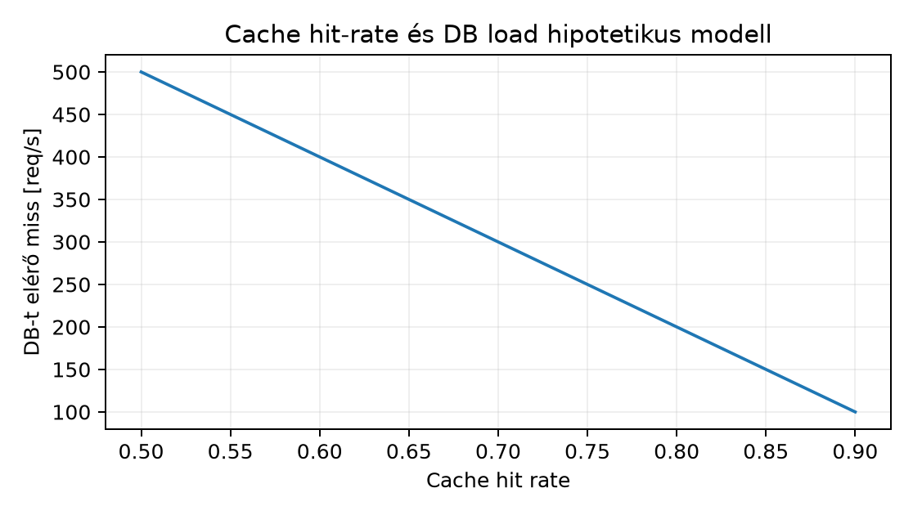

Egy szenior C++ szolgáltatás rendszerint nem közvetlenül az adatbázist terheli minden olvasásnál, hanem egy memóriaalapú gyorsítótárat, jellemzően Redis-t helyez elé. A Redis esetében a leggyakoribb termelési hibák nem a Redis kieséséből, hanem abból fakadnak, hogy a fejlesztő vagy az operátor nem különbözteti meg a cache szerepét a durable source of truth szerepétől. A Redis-ben lévő érték elvesztése nem feltétlenül adatvesztés, de nagyon gyorsan adatbázis-túlterhelést okozhat, ha a gyorsítótár találati aránya (hit rate) zuhan. Ezt a d008 várakozási soros modelljével lehet előre jelezni: a Redis hit rate csökkenése megnöveli az adatbázisba érkező kérések értékét, ami a kihasználtság növekedéséhez, majd a várakozási idő nemlineáris megugrásához vezet. Ebben az alfejezetben a Redis cache üzemeltetési szerződését építjük fel: memória, TTL, eviction, persistence, replikáció, hitelesítés, bemelegítés és leromlott üzemmód.
A tipikus cache-aside adatútban a C++ szolgáltatás először Redis-ből olvas. Találat (hit) esetén nem éri az adatbázist; hiba (miss) esetén a PostgreSQL-ből olvas, majd visszaírja a Redis-be. Ebben a modellben a source of truth mindig a PostgreSQL; a Redis tartalma reprodukálható másolat. A Redis így nem adattárolási, hanem terheléscsökkentési funkcionalitást ad.
A working set (munkahalmaz) azoknak a kulcsoknak a
halmaza, amelyeket a szolgáltatás egy adott időablakban ténylegesen kér.
Ha a Redis rendelkezésre álló maxmemory kisebb, mint a
working set, akkor a Redis folyamatosan kiszorít (evict) kulcsokat, a
hit rate csökken, és a miss-ek egyre több lekérdezést terhelnek az
adatbázisra.
A time to live (TTL) az egyes kulcsok érvényességi ideje. A Redis kombináltan törli a lejárt kulcsokat: lazy expiration során hozzáféréskor veszi észre, active expiration során pedig háttérben mintavételez. A TTL megválasztása trade-off: rövid TTL friss adatot ad, de több miss-t; hosszú TTL jobb hit rate-et ad, de megnő a stale adat kockázata.
A Redis csak akkor kényszerít ki kulcsokat, ha a
maxmemory limitet eléri. A maxmemory-policy
adja meg, mit szabad eldobni:
noeviction: írási hiba, ha nincs memória; cache-ként
általában nem megfelelő.allkeys-lru: minden kulcs közül a legrégebben
használtat távolítja el.allkeys-lfu: minden kulcs közül a legritkábban
használtat dobja ki.volatile-lru, volatile-lfu,
volatile-random, volatile-ttl: csak TTL-es
kulcsokra hatnak.Cache-ként a leggyakoribb, hozzávetőlegesen LRU alapú
allkeys-lru vagy a frekvenciaalapú
allkeys-lfu. Az INFO stats mezőjében az
evicted_keys mutatja a kiszorítások számát, az
INFO memory maxmemory_human és
used_memory_human mezője pedig a limitet és a tényleges
használatot.
Cache stampede-nek (gyorsítótár-torlódásnak) nevezzük, amikor egy népszerű kulcs egyszerre jár le, és sok párhuzamos kérés miss-t okoz. Ilyenkor minden kérés egymástól függetlenül betölti ugyanazt az adatot az adatbázisból, majd mindegyik ír a Redis-be. A Redis CPU ilyenkor alacsony, de a PostgreSQL kapcsolatszáma és kihasználtsága hirtelen megnő. A megoldás a request coalescing: a kulcsonkénti lock segítségével csak egy kérés tölti be az adatot, a többiek rövid várakozás után újra próbálnak a Redis-ből olvasni. Emellett segít a TTL-jitter (véletlenszerű TTL hozzáadása), hogy a lejárat ne egyszerre következzen be.
A Redis két persistence mechanizmust ismer:
save <seconds> <changes>). Kisebb folyamatos
költség, de az utolsó snapshot után írt adatok elveszhetnek.appendonly yes). A appendfsync lehet
always, everysec, vagy no; a
everysec jó kompromisszum a tartósság és a teljesítmény
között.Cache szerepben a Redis-t általában save "" és
appendonly no konfigurációval futtatjuk: a Redis tartalma
szándékosan nem tartós. Ha a Redis session store-t vagy más, nem
reprodukálható adatot tárol, akkor már nem tiszta cache, és a
persistence, replikáció, valamint a failover tartóssági vállalása
explicit konfigurációt igényel.
replicaof <master-ip> <master-port>
beállítással a másodpéldány read-only másolatot tart fenn. Az adat
replikáció aszinkron, így master-kieséskor az utolsó írások
elveszhetnek. Cache-ként ez elfogadható, mert a source of truth a
PostgreSQL-ben van.Cache-ként a replikáció és a Sentinel/Cluster nem az adattartósságot, hanem a hit rate fenntartását és a Redis tier rendelkezésre állását növeli.
Egy Redis cache-t nem szabad nyilvános hálózatra nyitni. A
bind 127.0.0.1 és a protected-mode yes az alap
loopback-szintű védelem. A requirepass egyetlen jelszót ad;
modern Redis esetén ACL-t használhatunk:
ACL SETUSER app on >dummy-password ~cache:* +get +set +delA TLS megléte verziófüggő; sok régebbi telepítésben külső proxy,
például stunnel adja. A command scope tervezésénél kerülendő a blokkoló
KEYS és a teljes törlést végző FLUSHALL.
Helyettük SCAN és UNLINK használandó, mert a
Redis parancsvégrehajtása jellemzően egyetlen szálon fut, és a lassú
parancs az összes kérés válaszidejét rontja.
UNLINK vagy DEL szükséges, különben az
alkalmazás stale adatot olvas. Ha TTL-t használunk, a TTL-t a
frissességi követelményből kell levezetni.A cél egy Redis cache konfigurálása laborban, ahol a source
of truth a labdb1 PostgreSQL szerver, a Redis
pedig a labcache1 hoston futó cache. A Redis tartalma
szándékosan nem tartós; minden kulcs a PostgreSQL-ből
reprodukálható.
Feltételezések: labcache1 Ubuntu Server 24.04 LTS, Redis
csomag telepítve, de a konkrét verzió és a pontos config-szintaxis
ellenőrizendő. Az alábbi /etc/redis/redis.conf kivonat
cache profilt ad:
bind 127.0.0.1
protected-mode yes
port 6379
requirepass dummy-password
maxmemory 64mb
maxmemory-policy allkeys-lru
save ""
appendonly no
timeout 300A save "" és appendonly no itt azért
helyes, mert a Redis nem source of truth. A PostgreSQL az egyetlen
tartós állapot, ezért a Redis-ből való adatvesztés nem adatvesztés,
hanem hideg cache-t jelent.
Indítás és ellenőrzés:
sudo systemctl restart redis-server
REDISCLI_AUTH=dummy-password redis-cli ping
REDISCLI_AUTH=dummy-password redis-cli CONFIG GET maxmemory
REDISCLI_AUTH=dummy-password redis-cli CONFIG GET maxmemory-policy
REDISCLI_AUTH=dummy-password redis-cli CONFIG GET save
REDISCLI_AUTH=dummy-password redis-cli CONFIG GET appendonlyVárható kimenet: PONG, a maxmemory
67108864, a maxmemory-policy
allkeys-lru, a save üres, az
appendonly no.
Adatfeltöltés a memóriakorlát átlépéséhez, illusztratív jelleggel:
for i in $(seq 1 20000); do
REDISCLI_AUTH=dummy-password redis-cli SET "key:$i" "$(openssl rand -base64 3072)" EX 600 >/dev/null
doneA generált érték mérete körülbelül 4 KiB kulcsonként, tehát 20 000 kulcs nagyjából 80 MiB adatot jelent, ami fölé megy a 64 MiB limitnek. A Redis a beérkező írások közben evictál.
Ellenőrzés:
REDISCLI_AUTH=dummy-password redis-cli INFO memory | grep -E 'used_memory_human|maxmemory_human|maxmemory_policy'
REDISCLI_AUTH=dummy-password redis-cli INFO stats | grep -E 'evicted_keys|expired_keys|keyspace_hits|keyspace_misses'
REDISCLI_AUTH=dummy-password redis-cli DBSIZEVárt, nem mért kimeneti jellemzők: used_memory_human a
maxmemory környékén marad, evicted_keys
nagyobb nullánál, és DBSIZE kisebb 20 000-nél. A
kiszorított kulcsok a TTL-lejárat előtt eltűnnek a cache-ből, ezért a
hit rate csökken, és a PostgreSQL felé irányuló kérések száma nő.
A hit rate és a terhelés összefüggése numerikusan is felírható:
| Cache hit rate | Miss rate | DB-t elérő miss [req/s] |
|---|---|---|
| 0.50 | 0.50 | 500 |
| 0.60 | 0.40 | 400 |
| 0.70 | 0.30 | 300 |
| 0.80 | 0.20 | 200 |
| 0.90 | 0.10 | 100 |
Feltéve, hogy az alkalmazás 1000 req/s sebességgel kérdez, és minden cache miss a DB-t terheli:

A Redis-ben tárolt kulcsok ebben a példában csak cache másolatok. Ha
a FLUSHALL vagy egy node-kiesés miatt az összes cache
elveszik, a szolgáltatás számára az egyetlen igazság a PostgreSQL; hideg
cache esetén újra kell tölteni.
A stampede elleni request coalescing C++ vázlata:
std::optional<Row> getRow(const std::string& id) {
auto cached = redis.get(id);
if (cached) return decode(*cached);
// lock a kulcsra, hogy csak egy kérés töltse be a DB-ből
redis::guard lock(redis, "lock:row:" + id, std::chrono::seconds(5));
if (!lock.acquired()) {
std::this_thread::sleep_for(std::chrono::milliseconds(20));
cached = redis.get(id);
if (cached) return decode(*cached);
// ha még mindig nincs, a hívó eldöntheti, hogy továbbereszti-e a DB-nek
}
auto row = db.getRow(id);
redis.set(id, encode(row), TTL{60s});
return row;
}A redis::guard itt
SET lock:row:<id> token NX EX formában kér lockot,
így a párhuzamos kérések közül csak egy megy a PostgreSQL-hez. A
Redis-ben tárolt row továbbra is cache másolat, nem source
of truth; a lock lejárta vagy a Redis lock elvesztése nem adatvesztést,
hanem esetleges dupla DB-olvasást okoz.
Tünet: a Redis írások
OOM command not allowed when used memory > 'maxmemory'
hibával elszállnak.
Hipotézis: a maxmemory kisebb a working
set-nél, és a maxmemory-policy
noeviction.
Adatgyűjtés: redis-cli INFO memory,
redis-cli CONFIG GET maxmemory-policy.
Egy változtatás:
CONFIG SET maxmemory 128mb,
CONFIG SET maxmemory-policy allkeys-lfu, majd az
evicted_keys növekedését ellenőrizni.
Postcondition: a Redis cache-ként kiszorít, a forrás
PostgreSQL-t nem érinti.
Tünet: a Redis elérhető, de a PostgreSQL CPU
hirtelen 100%-ra ugrik.
Hipotézis: cache stampede vagy alacsony hit rate.
Adatgyűjtés: Redis INFO stats
keyspace_hits/keyspace_misses, PostgreSQL
pg_stat_statements vagy slow log, a Redis
slowlog get.
Egy változtatás: request coalescing bevezetése a
kulcsonkénti lockkal, illetve TTL-jitter.
Ellenpróba: a PostgreSQL kapcsolatszám és a válaszidő
csökken, a Redis keyspace_hits aránya javul.
Tünet: a Redisben lévő érték régebbi, mint a
PostgreSQL-ben lévő.
Hipotézis: write után nincs explicit invalidálás, vagy
túl hosszú a TTL.
Adatgyűjtés: a Redis kulcs és a PostgreSQL
updated_at mező összehasonlítása.
Egy változtatás: write után UNLINK a
Redis-ből, vagy rövid TTL.
Postcondition: az alkalmazás a következő olvasásnál
friss source-of-truth adatot kap.
Tünet: Sentinel failover után a Redis-ből írások
tűntek el.
Hipotézis: a Redis-t source of truth-ként használták
aszinkron replikációval.
Egy változtatás: a Redis-t cache-ként konfigurálják, a
tartós adatot a PostgreSQL replikáció és backup védi. Ha a Redis tényleg
forrás, akkor AOF appendfsync always, Sentinel quorum és
írás confirm szükséges.
Egy szolgáltatás 1000 req/s sebességgel olvas. A Redis hit rate 90%, minden miss 10 lekérdezést indít a PostgreSQL felé. A PostgreSQL kapacitása 1200 query/s. Számítsd ki a DB kihasználtságát -t. Mennyi a DB load, ha a hit rate 70%-ra esik vissza az eviction miatt? Mi történik a várakozási idővel a d008 M/M/1 modellje szerint? Milyen Redis beavatkozást javasolnál?
A labcache1 hoston állítsd be a Redis-t úgy, hogy
maxmemory 128 MiB legyen, maxmemory-policy
allkeys-lru, persistence kikapcsolva, requirepass
dummy-password, a Redis csak loopbackon figyeljen.
Dokumentáld, hogy a Redis nem source of truth, és írd meg a
konfigurációt, az újraindítást és az ellenőrző parancsokat.
A laborban állítsd le a Redis-t
(sudo systemctl stop redis-server). A szolgáltatás
fail-open üzemmódban közvetlenül a PostgreSQL-hez fordul. Fogalmazd meg
a várható hatást a DB kihasználtságára, és tervezd meg a Redis indítás
utáni warmup scriptet és egy circuit breakeres degraded operation
policy-t. Mi a postcondition: a Redis hideg cache, a PostgreSQL a
forrás, és a szolgáltatás tovább működik.
A miss rate 0.10, tehát miss-ek száma req/s. Minden miss 10 query, így a DB terhelése query/s. A DB kihasználtsága . Ha a hit rate 70%-ra romlik, a miss rate 0.30, a miss-ek req/s, a DB terhelése query/s, a kihasználtság , ami túlterhelést jelent. Az M/M/1 várakozási idő ; a miatt a modell már instabil, a gyakorlatban a sor hossza és a válaszidő drasztikusan nő. Beavatkozás: növelni kell a Redis memóriát, optimalizálni a TTL-t, eviction policy-t, és szükség esetén request coalescinget bevezetni, hogy a forró kulcsok ne egyszerre járjanak le.
/etc/redis/redis.conf:
bind 127.0.0.1
protected-mode yes
port 6379
requirepass dummy-password
maxmemory 128mb
maxmemory-policy allkeys-lru
save ""
appendonly no
timeout 300Ellenőrző parancsok:
sudo systemctl restart redis-server
REDISCLI_AUTH=dummy-password redis-cli ping
REDISCLI_AUTH=dummy-password redis-cli CONFIG GET maxmemory
REDISCLI_AUTH=dummy-password redis-cli CONFIG GET maxmemory-policy
REDISCLI_AUTH=dummy-password redis-cli CONFIG GET requirepassPostcondition: a Redis a loopbackon hallgat, cache-ként működik, a Redis-ből való adatvesztés nem adatvesztés, mert a forrás a PostgreSQL.
A sudo systemctl stop redis-server után a Redis nem
elérhető. A szolgáltatás cache-miss-t lát minden kulcsra, ezért minden
kérést a PostgreSQL-hez továbbít. A DB load a miss rate 100%-os értékre
nő, a kihasználtság ugrik. A warmup script indításkor beolvashatja a
legnagyobb forgalmú kulcsokat:
for id in $(cat /etc/labcache/warmup-keys.txt); do
REDISCLI_AUTH=dummy-password redis-cli SET "row:$id" "$(psql -h labdb1 -U app -d app -t -c "SELECT encode(row_to_json(t)::text, 'base64') FROM rows WHERE id = '$id'")" EX 600 >/dev/null
doneA circuit breaker lényege: ha a Redis pillanatnyi hibaaránya meghaladja a küszöböt, a szolgáltatás rövid ideig közvetlen DB-olvasást végez, de a kelleténél több ideig nem terheli a DB-t. A Redis tartalma hideg cache; a PostgreSQL továbbra is az igazság forrása.
A Redis cache-ként a PostgreSQL előtti olvasási terhelést csökkenti,
de nem source of truth. A working set a ténylegesen
kért kulcsok halmaza; ha nagyobb a maxmemory-nál, a Redis
evictál, és a hit rate csökken. A cache stampede akkor
lép fel, amikor egy népszerű kulcs lejárta után sok kérés egyszerre
olvas a DB-ből; a megoldás a request coalescing. A persistence
policy cache-ként save "" és
appendonly no, míg source-of-truth szerepben RDB/AOF és
replikáció szükséges. A Sentinel/Cluster a Redis rendelkezésre állást és
kapacitást növeli, de az adattartósságot a forrásrendszer
garantálja.
Ellenőrzési hiányok: az aktuális Redis szerver pontos verziója, a
maxmemory-policy, Sentinel/Cluster és TLS konfiguráció
verziófüggő szintaxisa nem ellenőrzött. A lab parancsok nem futtatottak,
a számított várt értékek illusztratívak. Ubuntu Server 24.04 csomagjában
lévő Redis konkrét viselkedését külön release-note ellenőrzéssel kell
megerősíteni. A PostgreSQL és Redis közötti forgalmi adatok
hipotetikusak, nem valódi mérésből származnak.